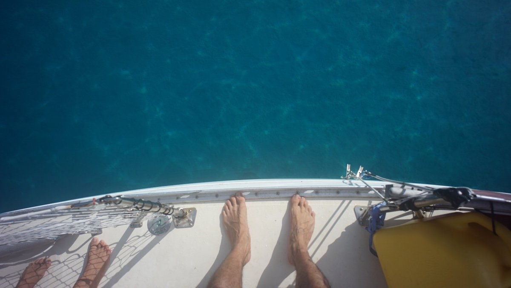
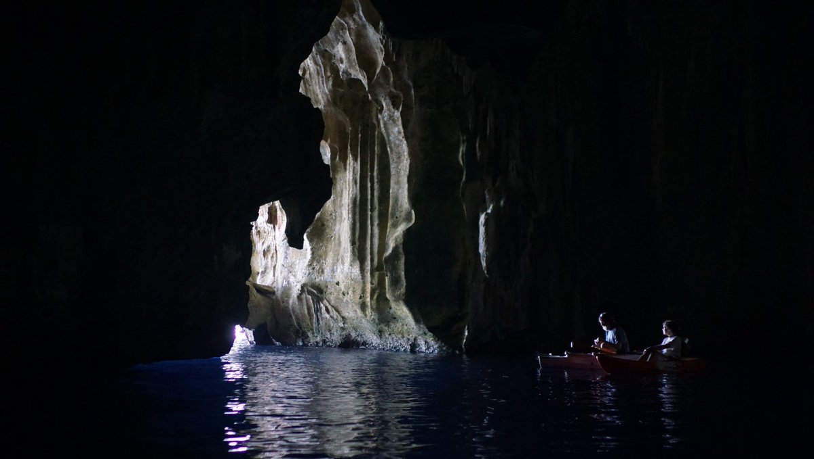
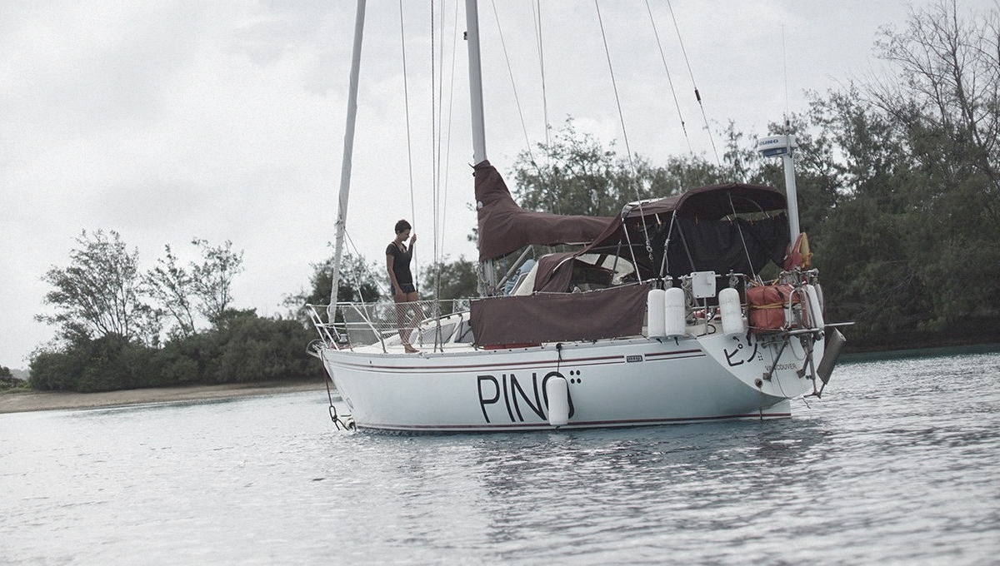

tonga
In mid August 2017, we sailed to Tonga and stayed for 2 1/2 months. We spent most of our time tucked into Port Maurelle, a bay sheltered from most directions that is perfect for swimming.
We saw many wonderful sea creatures here, like octopus, sea turtles, cuttlefish, needle fish, rainbow fish etc. Devine liked to swim in the deeps, and was able to dive down to 9 m (30 ft) with just a snorkle mask. We dropped a towel once, it settled in the sand underneath Pino and Devine was able to retrieve it. Rekka is a long-distance surface swimmer, and would circle the entire bay almost every day. We liked to play catch on the beach, and cartwheeling in the shallows.
Port Maurelle had no services, if we wanted to get food we had to sail to Neiafu.
We liked to buy raw shelled peanuts to roast ourselves.
 